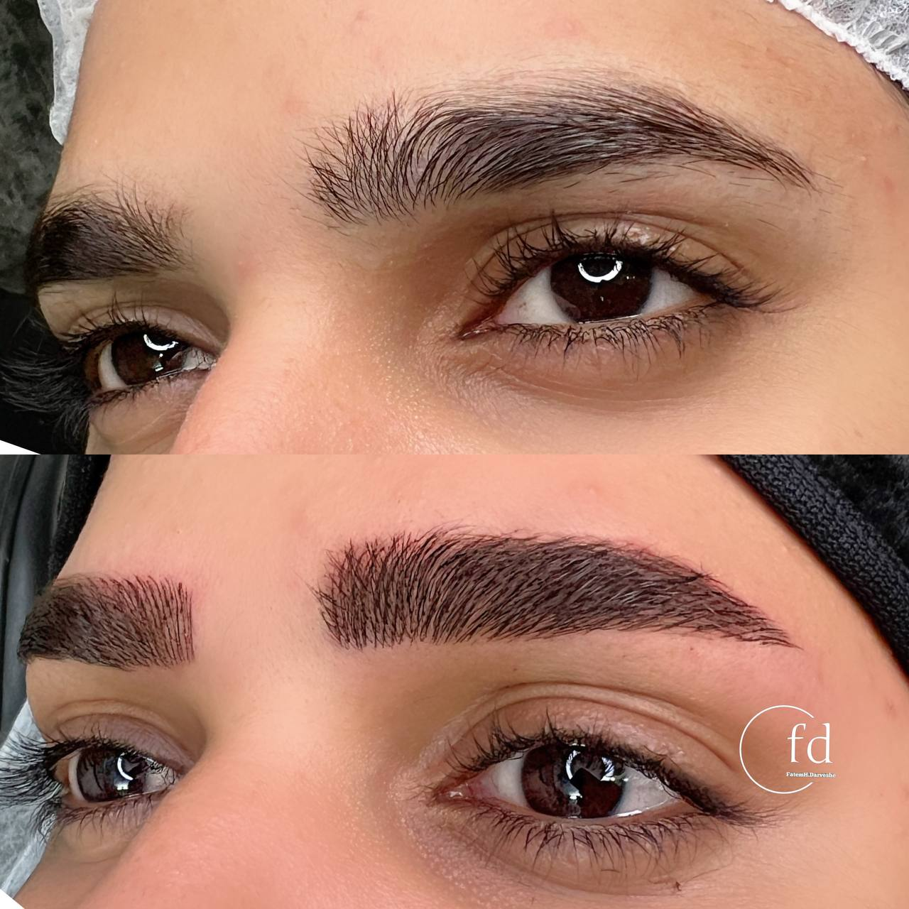

راهنمای کامل آرایش دائم: هرآنچه قبل از انجام باید بدانید
نوشته شده در تاریخ ۲۰ تیر ۱۴۰۴ - توسط: م.اشرفی
آرایش دائم یا میکروپیگمنتیشن، هنری است که به شما کمک میکند در هر ساعت از شبانهروز، ظاهری آراسته و طبیعی داشته باشید. اما قبل از برداشتن این قدم بزرگ برای زیبایی ماندگار، سوالات و نگرانیهای زیادی وجود دارد. این راهنمای کامل، پاسخ تمام سوالات شما از **چیستی آرایش دائم** گرفته تا **ماندگاری، عوارض احتمالی و انتخاب بهترین متخصص در مشهد** را در خود جای داده است.
آرایش دائم چیست و چگونه انجام میشود؟
آرایش دائم (Permanent Makeup) که با نام علمی **میکروپیگمنتیشن** شناخته میشود، فرآیندی است که در آن رنگدانههای معدنی و کاملاً سازگار با پوست، با استفاده از دستگاههای دیجیتال و سوزنهای بسیار ظریف، به لایههای سطحی پوست تزریق میشود. این تکنیک برای اصلاح، قرینهسازی و بهبود ظاهر ابروها، چشمها و لبها به کار میرود و نتیجه آن میتواند از یک تا چند سال ماندگاری داشته باشد.
انواع خدمات محبوب آرایش دائم
دنیای آرایش دائم بسیار گسترده است، اما سه حوزه اصلی آن بیشترین محبوبیت را دارند:
۱. میکروبلیدینگ و فیبروز ابرو
این تکنیکها برای افرادی که ابروهای کمپشت، نامتقارن یا بیحالت دارند، یک معجزه محسوب میشود. با ایجاد خطوطی به ظرافت تار موی واقعی، ابروهایی کاملاً طبیعی و پرپشت برای شما طراحی میشود.
۲. خط چشم و بن مژه دائم
با خط چشم دائم دیگر نیازی به صرف وقت روزانه برای کشیدن خط چشم ندارید. تکنیک **بن مژه** نیز با پر کردن فضای خالی بین مژهها، باعث پرپشتتر به نظر رسیدن آنها و افزایش گیرایی چشمها میشود.
۳. رژ لب و کانتور لب دائم
این خدمت برای افرادی که لبهای بیرنگ یا نامتقارن دارند، ایدهآل است. با کانتور لب میتوان فرم لبها را اصلاح کرد و با تکنیک رژ لب دائم، رنگی زیبا و طبیعی به آنها بخشید.
آیا من کاندید مناسبی برای آرایش دائم هستم؟
اگرچه آرایش دائم برای اکثر افراد مناسب است، اما در موارد زیر بهتر است با احتیاط بیشتری عمل کرده یا از انجام آن خودداری کنید:
- خانمهای باردار یا شیرده: به دلیل تغییرات هورمونی، بهتر است این کار را به بعد از این دوران موکول کنند.
- افراد مبتلا به دیابت: این افراد باید حتماً با پزشک خود مشورت کنند.
- بیماریهای پوستی خاص: در صورت داشتن بیماریهایی مانند اگزما یا پسوریازیس در ناحیه مورد نظر، انجام آرایش دائم توصیه نمیشود.
- مصرف داروهای خاص: مصرف داروهای رقیقکننده خون یا راکوتان میتواند در نتیجه کار اختلال ایجاد کند.
ماندگاری آرایش دائم چقدر است؟
ماندگاری آرایش دائم یک عدد ثابت نیست و به عوامل متعددی بستگی دارد:
- نوع پوست: در پوستهای چرب، به دلیل ترشح چربی، ماندگاری رنگدانهها کمتر است.
- مراقبتهای بعد از عمل: رعایت دقیق دستورالعملها، بیشترین تاثیر را در دوام کار دارد.
- سبک زندگی: قرار گرفتن در معرض نور خورشید، شنا در استخر و لایهبرداری مکرر پوست، عمر آرایش دائم را کاهش میدهد.
به طور کلی، میتوان انتظار داشت که آرایش دائم بین **۱ تا ۳ سال** دوام داشته باشد و پس از آن نیاز به جلسه ترمیم و تمدید خواهد داشت.
انتخاب بهترین پیگمنتر در مشهد: به چه نکاتی توجه کنیم؟
انتخاب فرد متخصص، مهمترین تصمیم شماست. یک پیگمنتر حرفهای باید ویژگیهای زیر را داشته باشد:
- نمونه کارهای قوی و واقعی: حتماً نمونه کارهای قبل و بعد ایشان را ببینید.
- رعایت بهداشت: از استریل بودن محیط و یکبار مصرف بودن تمام تجهیزات (سوزن، کارتریج و...) اطمینان حاصل کنید.
- ارائه مشاوره دقیق: یک متخصص خوب، قبل از هر کاری برای شما وقت میگذارد، به سوالاتتان پاسخ میدهد و طراحی اولیه را متناسب با چهره شما انجام میدهد.
سوالات متداول (FAQ)
آیا آرایش دائم دردناک است؟
خیر. با استفاده از کرمها و مواد بیحسی قوی قبل و حین کار، حس درد به حداقل ممکن میرسد و بیشتر شبیه به یک لرزش یا خراش خفیف است.
هزینه آرایش دائم چقدر است؟
قیمت آرایش دائم به نوع خدمت (ابرو، چشم یا لب)، تکنیک مورد استفاده و تجربه پیگمنتر بستگی دارد. برای اطلاع از قیمتهای دقیق، بهتر است یک جلسه مشاوره داشته باشید.
دوران نقاهت و بهبودی چقدر طول میکشد؟
دوران بهبودی اولیه حدود ۷ تا ۱۴ روز طول میکشد که در این مدت پوستهریزی خفیفی در ناحیه ایجاد میشود. اما برای دیدن نتیجه نهایی و تثبیت کامل رنگ، حدود یک ماه زمان لازم است.